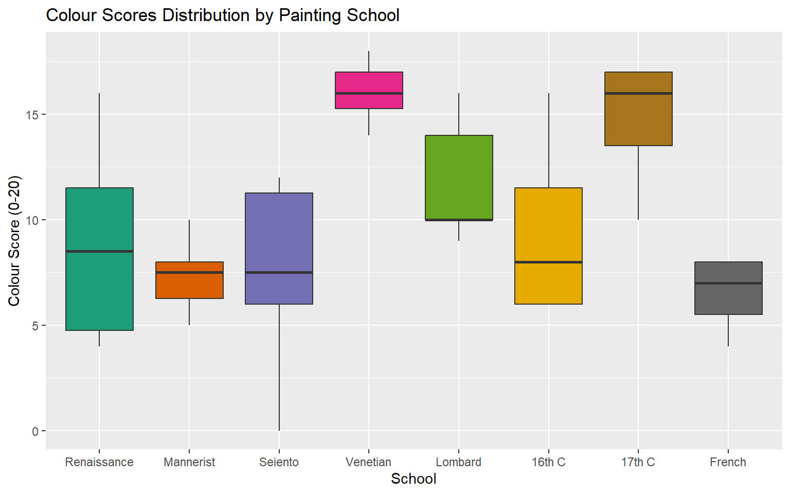
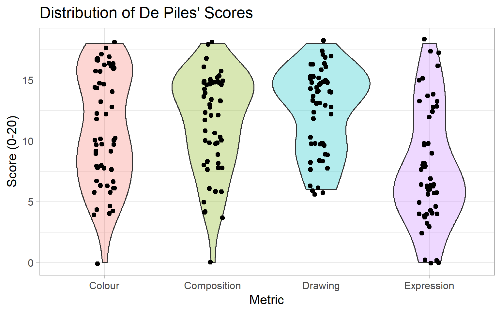
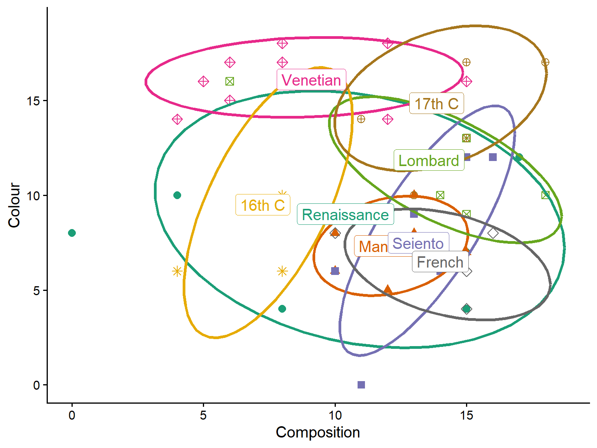
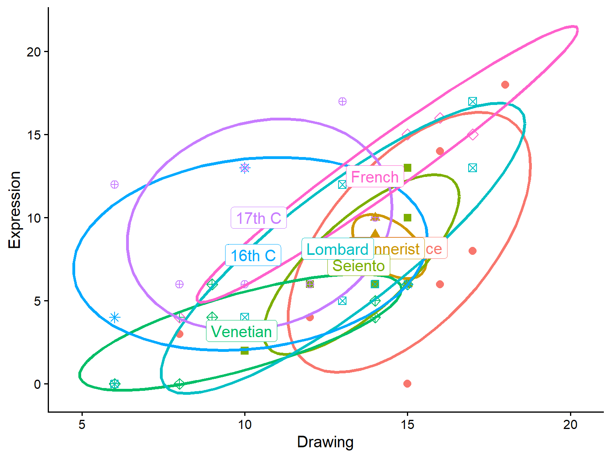
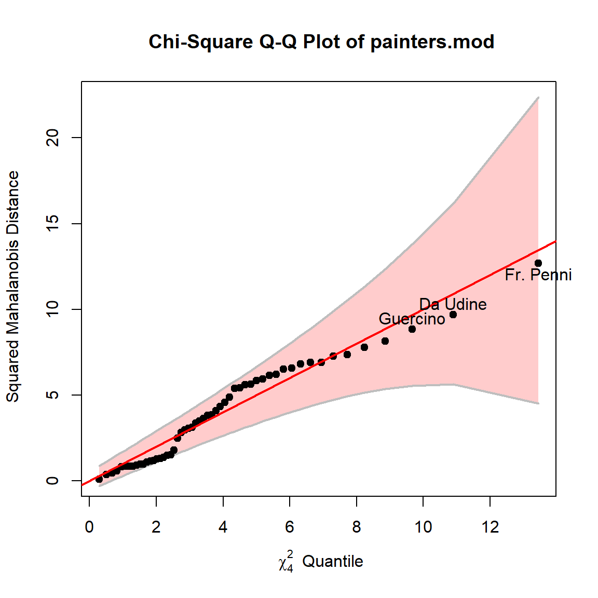
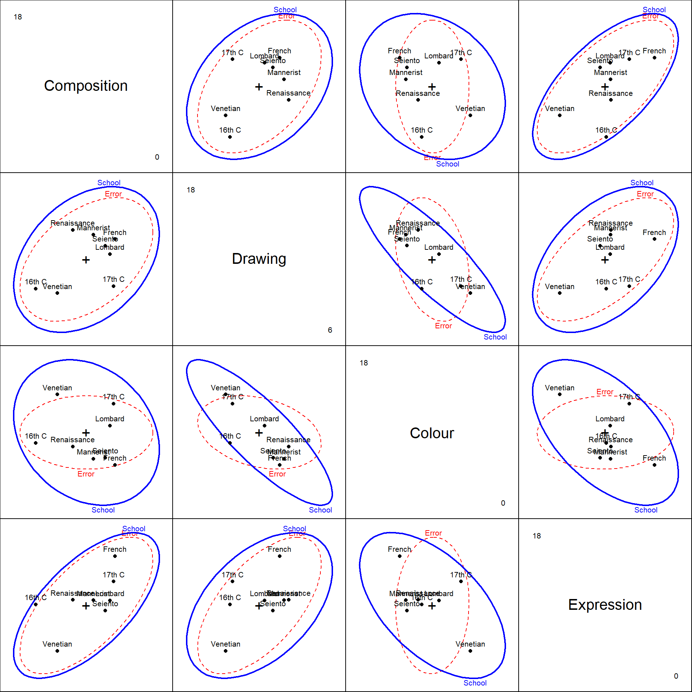
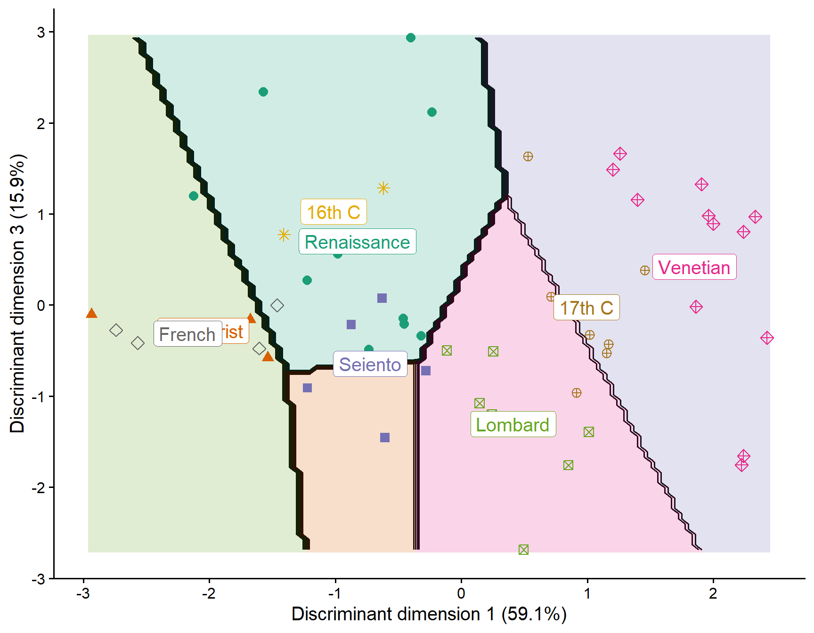

| Chronological overview of painting schools | ||
|---|---|---|
| School | Period | Characteristics |
| Renaissance | 1400-1520 | Emphasis on naturalism, perspective, classical ideals; focus on balance, harmony, and proportion. Key figures: Leonardo, Michelangelo, Raphael. |
| Venetian | 1450-1600 | Rich color and light effects (overlaps Renaissance/Mannerist periods); emphasis on sensuous surfaces, atmospheric effects. e.g.: Titian, Veronese, Tintoretto. |
| Lombard | 1490-1600 | Northern Italian style; naturalism with dramatic chiaroscuro; influenced by both Renaissance ideals and Venetian colorism. e.g.: Albani, Caravaggio |
| 16th C | 1500-1600 | Late Renaissance through Mannerism; transition period showing diverse regional styles across Europe. |
| Mannerist | 1520-1600 | Reaction to Renaissance harmony; elongated figures, complex compositions, artificial elegance, and emotional intensity. e.g.,: Parmigiano |
| Sciento | 1600-1700 | Likely refers to 17th century Italian schools emphasizing dramatic realism and scientific observation of nature (possibly related to Caravaggio's influence). |
| 17th C | 1600-1700 | Baroque period; dramatic use of light and shadow, movement, emotional intensity, grandeur. Includes Caravaggism and various national Baroque styles. |
| French | 1600-1750 | French Baroque and emerging Rococo; emphasis on classical restraint, academic standards, royal patronage. Poussin, Claude Lorrain, later Watteau. |
Vignette built using heplots, version 1.7.8, candisc, version 1.1.0 and ggplot2, version 4.0.1.
Introduction
The painters dataset from the MASS package contains subjective assessments of 54 classical painters on four aesthetic qualities: Composition, Drawing, Colour, and Expression. These ratings, on a scale of 0-20, were made by the 18th century art critic Roger de Piles (1743), a notable member of the French Academy of Painting and Sculpture. The ratings reflect his judgment of the “artistic merit” of these painters on each of these dimensions. His painters include the well-known Michelangelo, Tintoretto, Titian, Rembrandt, Rubens, Durer and others that art historians know well.
The 54 painters are classified into eight schools: Renaissance (A), Mannerist (B), Seicento (C), Venetian (D), Lombard (E), Sixteenth Century (F), Seventeenth Century (G), and French (H). This data was first analysed by Davenport & Studdert-Kennedy (1972). Jolliffe (1986) used it to illustrate principal components analysis, and the data later featured in Venables & Ripley (2002), who put it into the MASS package.
Painters schools: Going further
Other analysts largely treated the schools of painting used by de Piles as discrete categories, and this is the path I follow here.
But, for the record, it is possible to go further, by placing these schools in approximate chronological order and describing some of their characteristics, as shown in Table 1.
For example, for other analyses, the School variable could be made an ordered factor, or schools could be categorized into in broad periods (“Early”, “Transition”, “Baroque”), or by main emphasis (“Form”, “Color”, “Drama”)
This vignette
This vignette demonstrates the use of multivariate visualization methods of the candisc package, and its’ sister, heplots. The main goal is to illustrate how hypothesis-error (HE) plots, canonical discriminant analysis, and discriminant analysis plots help understand how the schools differ in their aesthetic characteristics. It shows that, while simple univariate and bivariate plots are often useful, dimension reduction methods can give a clearer view.
Let’s get started. Load packages, and the painters data.
library(MASS)
library(heplots)
library(candisc)
library(ggplot2)
library(car)
library(dplyr)
library(RColorBrewer)
data(painters, package = "MASS")
str(painters)
## 'data.frame': 54 obs. of 5 variables:
## $ Composition: int 10 15 8 12 0 15 8 15 4 17 ...
## $ Drawing : int 8 16 13 16 15 16 17 16 12 18 ...
## $ Colour : int 16 4 16 9 8 4 4 7 10 12 ...
## $ Expression : int 3 14 7 8 0 14 8 6 4 18 ...
## $ School : Factor w/ 8 levels "A","B","C","D",..: 1 1 1 1 1 1 1 1 1 1 ...Data Preparation
The School factor in the dataset just uses letters, “A” through “H”. We begin by using longer, more descriptive labels to identify the schools, making the plots easier to interpret.
school <- c("Renaissance", "Mannerist", "Seiento", "Venetian",
"Lombard", "16th C", "17th C", "French")
levels(painters$School) <- school
head(painters)
## Composition Drawing Colour Expression School
## Da Udine 10 8 16 3 Renaissance
## Da Vinci 15 16 4 14 Renaissance
## Del Piombo 8 13 16 7 Renaissance
## Del Sarto 12 16 9 8 Renaissance
## Fr. Penni 0 15 8 0 Renaissance
## Guilio Romano 15 16 4 14 RenaissanceHow many from each school?
The distribution of painters across schools is unbalanced, with some schools having many more representatives than others. In particular, the small for 16th C and French schools affect some multivariate methods (e.g., Box’s M test for equality, heplots::boxM()) which rely on estimating the within-group covariance matrices.
table(painters$School)
##
## Renaissance Mannerist Seiento Venetian Lombard 16th C
## 10 6 6 10 7 4
## 17th C French
## 7 4Exploratory plots
Before conducting formal multivariate analyses, we explore the data visually.
First, set up colors and other graphic attributes to be consistent across plots. I chose the RColorBrewer discrete palette, Dark2.
options(
ggplot2.discrete.colour = function() scale_colour_brewer(palette = "Dark2"),
ggplot2.discrete.fill = function() scale_fill_brewer(palette = "Dark2")
)
# base R graphics
school.colors <- brewer.pal(n = length(levels(painters$School)), name = "Dark2")
school.pch <- c(16, 17, 15, 9, 7, 8, 10, 5)A boxplot shows the distribution of Colour scores across schools. You could do the same for the other variables. In general, I try to suppress legends where possible, because the space they take reduces resolution for the data.
ggplot(data = painters, aes(x = School, y = Colour, fill = School)) +
geom_boxplot() +
labs(title = "Colour Scores Distribution by Painting School",
x = "School",
y = "Colour Score (0-20)") +
theme(legend.position = "none")
The Venetian and 17th C painters were given high marks for their use of color.
Alternatively, to examine all four aesthetic variables simultaneously, you need to reshape the data to long format. Here, I create violin plots overlaid with individual points.
painters_long <- painters |>
tidyr::pivot_longer(cols = c(Composition, Drawing, Colour, Expression),
names_to = "Metric", values_to = "Score")
ggplot(painters_long, aes(x = Metric, y = Score, fill = Metric)) +
geom_violin(alpha = 0.3) +
geom_jitter(width = 0.1) +
labs(title = "Distribution of de Piles' Scores",
y = "Score (0-20)") +
theme_light(base_size = 15) +
theme(legend.position = "none")
Note that de Piles used the full range of 0–20 for most of these measures, but the range for Drawing had no ratings in the lower quarter.
Sample scatterplots
Scatterplots of pairs of variables, with data ellipses for each school, can reveal the multivariate relationships and potential group separation, but they are limited to 2D views, where the other variables vary as they do.
Data ellipses and labels for the schools at their group mean help to make such plots more understandable.
means <- painters |>
group_by(School) |>
summarise(across(Composition:Expression, mean))
ggplot(painters,
aes(Composition, Colour,
color = School, shape = School)) +
geom_point(size=3) +
stat_ellipse(level = 0.68, linewidth = 1.3) +
geom_label(data = means,
aes(label = School)) +
scale_shape_manual(values = school.pch) +
theme_classic(base_size = 15) +
theme(legend.position = "none")
You can see, for example, that the Venetian school and 17th C painters were rated highest on use of color.
Simmilarly, here’s a plot for Drawing and Expression:
ggplot(painters,
aes(Drawing, Expression,
color = School, shape = School)) +
geom_point(size=3) +
stat_ellipse(level = 0.68, linewidth = 1.3) +
geom_label(data = means,
aes(label = School)) +
scale_shape_manual(values = school.pch) +
theme_classic(base_size = 15) +
theme(legend.position = "none")
However, with so many schools, it is hard to get a clear idea of how they differ on these aesthetic qualities from bivariate plots. Here’s where multivariate methods can help.
MANOVA: Testing school differences on the aesthetic qualities
We fit a multivariate linear model (MANOVA) to test whether schools differ significantly on the four aesthetic variables considered jointly. The model treats School as the predictor and the four aesthetic scores as a multivariate response.
painters.mod <- lm(cbind(Composition, Drawing, Colour, Expression) ~ School,
data = painters)
car::Anova(painters.mod)
##
## Type II MANOVA Tests: Pillai test statistic
## Df test stat approx F num Df den Df Pr(>F)
## School 7 1.34 3.32 28 184 6e-07 ***
## ---
## Signif. codes: 0 '***' 0.001 '**' 0.01 '*' 0.05 '.' 0.1 ' ' 1With School as an unordered factor, the intercept represents Renaissance painters. Coefficients for the other schools represent their difference from Renaissance.
coef(painters.mod)
## Composition Drawing Colour Expression
## (Intercept) 10.400 14.7000 9.000 8.20000
## SchoolMannerist 1.767 -0.3667 -1.667 -0.03333
## SchoolSeiento 2.767 -1.2000 -1.500 -1.03333
## SchoolVenetian -1.300 -4.8000 7.100 -5.00000
## SchoolLombard 3.171 -1.8429 2.857 -0.05714
## School16th C -3.150 -4.4500 0.500 -0.45000
## School17th C 3.457 -4.2714 5.857 1.80000
## SchoolFrench 3.600 -0.7000 -2.500 4.30000Check for multivariate outliers
Before interpreting the MANOVA results, we check for multivariate outliers using a chi-square Q-Q plot of squared Mahalanobis distances. This looks OK, because all the painters are well within the confidence bounds.
cqplot(painters.mod, id.n = 3)
HE plots
Hypothesis-error (HE) plots provide a visual representation of multivariate hypothesis tests. The H ellipse represents the hypothesis sum of squares and cross-products, while the E ellipse represents error (within-group) variation. When H extends anywhere outside E, there is evidence of a significant effect.
By default, the heplot() shows the first two variables (Composition and Drawing).

This tells us that the means for the schools of painting are positively correlated on these variables. The within-group residuals are also positively correlated, to about the same extent.
We can also examine other pairs of variables, such as Colour and Expression.
Here, the means for the schools are negatively correlated, but what seems to drive this is large difference between the French school, very high on Expression, but low on use of Colour, vs. the Venetian school which shows the reverse pattern.
All pairwise HE plots
To get a comprehensive view of how schools differ across all pairs of variables, we create a matrix of pairwise HE plots, provided by the heplots::pairs.mlm() method.
pairs(painters.mod)
The configuration of the means for the schools on these pairs of ratings might give food for thought to an art historian.
Canonical analysis
Canonical discriminant analysis reduces the dimensionality of the multivariate differences among schools. It finds linear combinations of the original variables that maximize between-group variation relative to within-group variation.
painters.can <- candisc(painters.mod)
painters.can
##
## Canonical Discriminant Analysis for School:
##
## CanRsq Eigenvalue Difference Percent Cumulative
## 1 0.607 1.5425 0.977 59.08 59.1
## 2 0.361 0.5650 0.977 21.64 80.7
## 3 0.293 0.4141 0.977 15.86 96.6
## 4 0.082 0.0893 0.977 3.42 100.0
##
## Test of H0: The canonical correlations in the
## current row and all that follow are zero
##
## LR test stat approx F numDF denDF Pr(> F)
## 1 0.163 3.65 28 156 1.2e-07 ***
## 2 0.415 2.53 18 125 0.0014 **
## 3 0.649 2.17 10 90 0.0267 *
## 4 0.918 1.03 4 46 0.4034
## ---
## Signif. codes: 0 '***' 0.001 '**' 0.01 '*' 0.05 '.' 0.1 ' ' 1The output shows how many dimensions (canonical variates) are needed to account for the differences among schools, along with the percentage of between-group variance explained by each dimension. The first two dimensions account for 81% of between-school variance, but the third dimension is also significant, adding 15.8%.
HE plot in canonical space
Plotting the data in canonical space provides the clearest view of group separation, as the canonical dimensions are specifically constructed to maximize differences among schools. Variable vector in this plot have components proportional to the correlations of the observed aesthetic variables with the canonical scores.

3D view
The analysis suggests three significant dimensions of differences among schools. We can visualize all three dimensions simultaneously using a 3D HE plot. This plot is not yet rendered in the vignette.
if(requireNamespace("rgl")) {
heplot3d(painters.can, col = c("pink", "brown"))
}Discriminant analysis
Linear discriminant analysis (LDA) provides another approach to understanding group differences and can be used for classification. Unlike canonical discriminant analysis, which focuses on visualization for the MANOVA model, LDA is optimized for predicting group membership. But the plot_discrim() provides something similar, and the dimensions are essentially the same.
painters.lda <- lda(School ~ .,
data = painters)
painters.lda
## Call:
## lda(School ~ ., data = painters)
##
## Prior probabilities of groups:
## Renaissance Mannerist Seiento Venetian Lombard 16th C
## 0.18519 0.11111 0.11111 0.18519 0.12963 0.07407
## 17th C French
## 0.12963 0.07407
##
## Group means:
## Composition Drawing Colour Expression
## Renaissance 10.40 14.70 9.000 8.200
## Mannerist 12.17 14.33 7.333 8.167
## Seiento 13.17 13.50 7.500 7.167
## Venetian 9.10 9.90 16.100 3.200
## Lombard 13.57 12.86 11.857 8.143
## 16th C 7.25 10.25 9.500 7.750
## 17th C 13.86 10.43 14.857 10.000
## French 14.00 14.00 6.500 12.500
##
## Coefficients of linear discriminants:
## LD1 LD2 LD3 LD4
## Composition 0.05735 -0.01973 -0.344511 -0.08775
## Drawing 0.03762 -0.38279 -0.008335 0.23755
## Colour 0.29469 -0.03376 0.004877 0.15250
## Expression -0.13497 0.27962 0.131856 0.11953
##
## Proportion of trace:
## LD1 LD2 LD3 LD4
## 0.5908 0.2164 0.1586 0.0342Again, we see that there are three dimensions that seem important in understanding how the Schools differ in terms of the ratings on these four aesthetic attributes.
The plot_discrim() function visualizes the discriminant analysis results by plotting observations in the space defined by the discriminant dimensions (LD1, LD2, etc.). Here we plot the first two discriminant dimensions:
plot_discrim(painters.lda, LD2 ~ LD1,
labels = TRUE,
labels.args = list(geom = "label")) +
scale_shape_manual(values = school.pch) +
theme_classic(base_size = 15) +
theme(legend.position = "none")
We can also examine other pairs of discriminant dimensions, such as LD1 and LD3:
plot_discrim(painters.lda, LD3 ~ LD1,
labels = TRUE,
labels.args = list(geom = "label")) +
scale_shape_manual(values = school.pch) +
theme_classic(base_size = 15) +
theme(legend.position = "none")
To complete this, it would be useful to add vectors for the variables in these plots as in the plots for the painters.can object shown above. This is not yet implemented in the package, but the vectors are given by columns of cor_lda()
cor_lda(painters.lda)
## LD1 LD2 LD3 LD4
## Composition -0.1824 0.2287 -0.90850 0.2984
## Drawing -0.5740 -0.4342 -0.23701 0.6525
## Colour 0.9491 0.2293 0.04403 0.2113
## Expression -0.4661 0.4811 -0.28324 0.6864Summary
This vignette has demonstrated the use of HE plots, canonical discriminant analysis, and discriminant analysis plots to understand how classical painting schools differ in their aesthetic characteristics. HE plots provide intuitive visual tests of multivariate hypotheses, canonical analysis reveals the dimensions of maximum group separation, and discriminant analysis plots show how well groups can be distinguished and classified in reduced dimensional space.
References
Davenport, M., & Studdert-Kennedy, G. (1972). The statistical analysis of aesthetic judgment: An exploration. Applied Statistics, 21(3), 324–333. http://doi.org/10.2307/2346281
Jolliffe, I. T. (1986). Principal component analysis. Springer Series in Statistics. Springer New York. http://doi.org/10.1007/978-1-4757-1904-8
Piles, R. de. (1743). The principles of painting. London: n.p.
Venables, W. N., & Ripley, B. D. (2002). Modern applied statistics with s (4th ed.). Springer, New York. http://doi.org/10.1007/978-0-387-21706-2